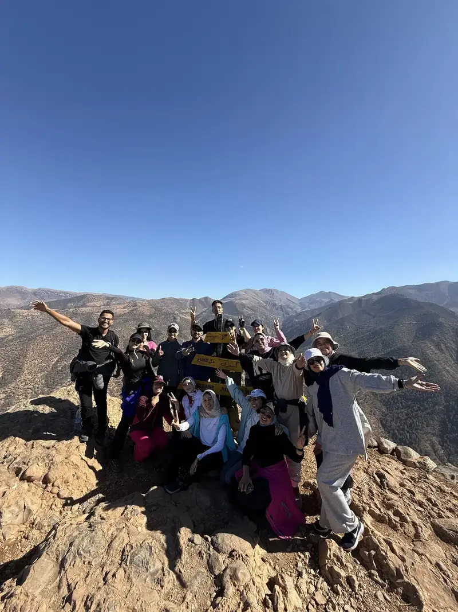
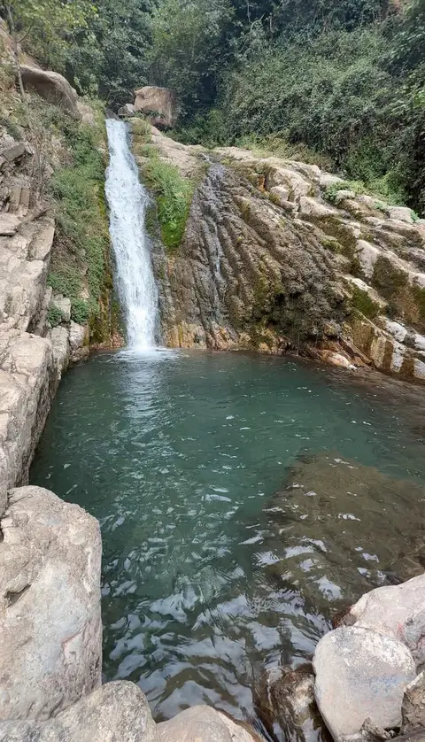
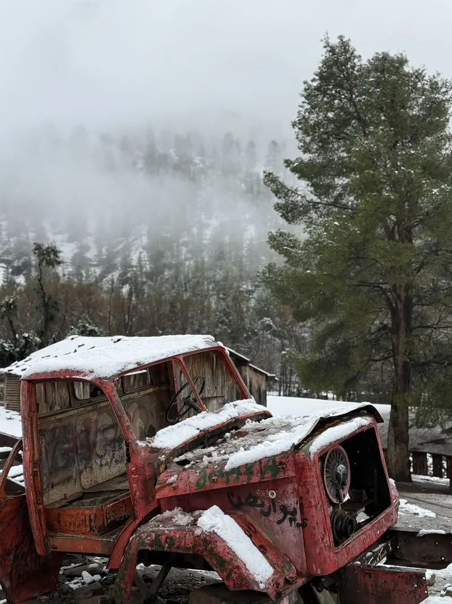

Two hiking experiences
Summit adventure or complete nature circuit
The summit is a separate mountain hike. The nature circuit combines the Oued Ahansal gorges, Wakoudene waterfalls and the famous old truck in one single trip for one price.

Route 1
Jebel Imsfrane Summit Hike
Climb to the summit of Jebel Imsfrane at an altitude of 1,868 metres. The route offers panoramic views over the Oued Ahansal valley and the surrounding High Atlas mountains.
- Approximately 5–10 hours
- 1,868 m
- Moderate to difficult
- Price for the group
- Meeting at the agreed starting point.
- Guided ascent through mountain paths.
- Panoramic stop and photos at the summit.
- Descent and return to the starting point.
Complete summit hike / Group
300 DH
Book the summit

Route 2
Complete Oued Ahansal Nature Circuit
This is one complete trip following the same route. The single price includes the Oued Ahansal gorges, Wakoudene waterfalls and the famous old truck. You do not pay separately for each place.
All three places included
- Oued Ahansal Gorges
- Wakoudene Waterfalls
- Visit to the Famous Old Truck
- Local guide for the complete circuit
- Approximately 3–5 hours
- Three places, one route
- Easy to moderate
- Price for the group
- Walk and photo stops in the Oued Ahansal gorges.
- Continue toward Wakoudene waterfalls.
- Visit and photo stop at the old truck.
- Return after completing all three visits.
Three places together / Group
200 DH
Book the full circuit
Included in the 200 DH circuit
Three places in one single trip
The three stops follow the same route and are included in one group price.
1
Oued Ahansal Gorges
Discover the river, the high rock walls and the natural passages of the valley.

2
Wakoudene Waterfalls
Continue through the natural landscape toward the waterfalls and seasonal pools.

3
The Famous Old Truck
Finish the circuit with a visit and an original photo stop at this local landmark.
Safety in the mountains
Prepare for your hiking experience
Follow the guide and respect weather conditions.
Suitable shoes
Wear comfortable shoes with good grip.
Bring water
Carry enough drinking water for the route.
Weather conditions
The route may change for safety reasons.
Stay with the group
Follow the guide and do not leave the route.
Hiking gallery
Discover both hiking experiences
FAQ
Frequently asked questions
No. The summit is a separate hike costing 300 DH per group.
The 200 DH group price includes the Oued Ahansal gorges, Wakoudene waterfalls and the old truck in one single trip.
No. The three places together cost only 200 DH for the complete group.
Yes. The route can be adapted according to weather, river level and trail conditions.
Book your hiking route
Summit or complete nature circuit?
Send us your date, group size and the route you want. We will confirm availability and the meeting point.